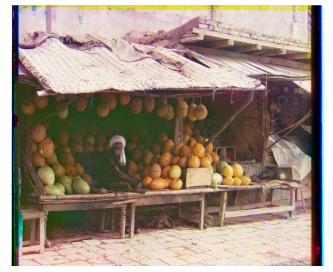

Project 1: Colorizing the Prokudin-Gorskii Photo Collection
By: Andi Liu
1. Introduction
Note: Displacements for all the images are listed in the Gallery.
For this project, we are using a dataset of pictures taken by Sergei Mikhailovich Prokudin-Gorskii. Each picture is a set of three glass plate negatives,taken with three different color filters of Red, Green, and Blue. For this project we are taking the three negatives and combining them into a single color image.
To start, we can place the three negatives side by side to get an idea of what they look like. For now we will start with an image with smaller
filesize, which is an image of a cathedral.

This is what the negatives look like with the red, green, and blue filters applied.
Now let us see what happens if we naively overlay the three color-filtered negatives as they are.
While we seem to get something resembling full-color, there are clearly many issues with this photo. First and most glaring is the alignment of the negatives is poor,
giving the image a blurry effect, and we can clearly see the overlaid copies of the image. For the first step of this project, we will focus on this alignment issue.
2. Alignment by Exhaustive Search
Since the alignment on our cathedral image is fairly close, we can create good alignment by simply trying various displacements of the three negatives. We will exhaustively search over aset window of displacements (between [-20,20] pixels in both horizontal and vertical directions) and score each one using the Normalized Cross-Correlation (the dot product between the two
normalized image vectors). We will then choose the displacement that gives us the best score, which ideally will be the displacement that give us good alignment between the three negatives.
Writing the Code:
There is a very important subtlety within our exhaustive search criteria. When we assign a score to each displacement, we only want to consider the quality of alignment of the parts that overlap.
So the Normalized Cross-Correlation is not computed between the entire images, but rather only the portion of the images that overlapped. Our algorithm will take this into consideration.
In order to see our results, we will also write a function to display the aligned images, using the displacement numbers given to us by our search algorithm. This function will not only align
the three filters, but it will also crop the images so that only the intersection of the three filters is shown. This allows us to inspect specifically the part of the image that our
search algorithm is optimizing. Once all this is done and we run our algorithm, we obtain the following:

We can now see a drastic improvement in alignment, however there are still clearly issues. There are still blue and yellow outlines where misalignments still exist. We can tell that our
algorithm works because yellow is a combination of red and green, meaning our algorithm worked extremely well for the red and green negatives, but there were issues causing it to
fail when aligning the blue and red negatives.This is most likely because the borders are causing noise for our algorithm. As we can see in the above image, there is a very large blue/black border
on the right that may be the cause of the blue misalignment. For now, we will manually crop off a 10 pixel border on all sides of the negatives and see if this yields an improvement:
Indeed, the misalignment of the blue negative was because of noise caused by the borders. Once we cropped the images, the red-green displacement stayed the same, but the red-blue displacement shifted
by four pixels. As a result, we now have excellent alignment of the filters. Keeping this in mind, for the rest of the project we will manually crop the borders before running our algorithms.
3. Testing Our Single Scale Alignment Algorithm
Now that we have a working single-scale alignment algorithm, let's see how it performs on some other images that have relatively small filesize. We will use our algorithm on the monastery and
tobolsk images. Below is a side-by-side of the negatives, followed by the full-color images aligned by our algorithm.


As we can see, our algorithm performs fantastically on both images. There are no visible alignment issues in either picture.
4. Image Pyramids
While our exhaustive search algorithm works very well for the relatively small pictures, for larger images exhaustive search is prohibitively expensive in runtime. Therefore, we will introduce a
new algorithm that uses image pyramids to speed up the process. The image pyramids will store the negatives at many resolutions, from coarse to fine, and this algorithm will perform a single-scale
displacement calculation at each layer. At the end, the displacements from each layer will be combined. The speedup from image pyramids should allow us to process the larger .tiff images.
Writing the Code:
Once I implemented the image pyramid alignment function pyramidBestDisplacement, it became immediately evident that my bestDisplacement function was too slow. The bestDisplacement function checked
alignments by adding different amounts of padding to each image, so that the images have lots of empty data and are displaced. Furthermore the bestDisplacement function could only calculate displacement
between two images at a time, so I had to call it twice. With these inefficiencies in mind I created an improved version, bestDisplacement2, that created different displacements by cropping the images
leaving only the intersecting area. Furthermore, bestDisplacement2 calculated two displacements at the same time, so I could calculate the green and blue displacements in one function call. This
drastically improved the runtime of the single-scale alignment algorithm, and in fact this was all that was needed. I wrote a second version of pyramidBestDisplacement using the improved single-scale
alignment and runtimes were generally around 2.5 minutes on each of the large .tif images. I further performed some tweaking with the parameters to determine which parameters would work on most images, and
settled on a 5-level image pyramid, with searching displacements between [-4,4] pixels at each scale. These parameters worked fairly well for most of the images. I furthermore introduced a wrapper
function to import, crop, and align the images. In this function I set the default cropping to 30 pixels on each edge. A few images had large borders that drastically affected alignment, however,
so those images required extra cropping.
Results Of Image Pyramid Algorithm
As we can see below, our image pyramid alignment algorithm works very well on most of the example images.
Cropping Issues Again
While the algorithm worked very well for the images above, there were a few images where it clearly had issues. In particular, the Onion Church image, the Self Portrait image, and the Train image
had substantial problems aligning. Upon inspection, the problem turned out to be the fairly large borders, which, just like in our single-scale algorithm, was causing problems. For these images
I had to manually increase the border cropping. Naturally, I could increase the universal border cropping, but that does cut off some of the picture, so it is preferable to manually tune the few
images that have problems. After a simple fix of increasing the border crop, these images also turned out excellently.
Before Cropping Adjustment
After Cropping Adjustment
For the Onion Church Image and Train Image, I adjusted border cropping from 30 pixels to 100 pixels. The Self Portrait Image required a larger adjustment, from 30 pixels to 200 pixels.
Other Examples From The Collection
Below are a few more example pictures I selected from the Prokudin-Gorskii collection. These are the results of running my algorithm on the 30ish MB .tif images.
Camel Carrying Sacks
Kostroma
Railroad Dam
Crumbling Mosque
Isfandiyar Khan of Khorezm
Note: this image also required a cropping adjustment, from 30 pixels to 200 pixels.
Gallery
Below includes all the images from this project, as well as the respective displacements computed by my algorithm.
Note: The red negative is the reference, so displacement of the red negative is always (0,0). A displacement of (x,y) refers to
a horizontal displacement of x, and a vertical displacement of y. A displacement in the upwards direction is considered a
positive y-displacement; a displacement in the leftwards (not rightwards) direction is considered a positive x-displacement.
Cathedral
Displacements (relative to red, in pixels):
Green: (-1, -7)
Blue: (-3, -12)
Monastery
Displacements (relative to red, in pixels):
Green: (-1, -6)
Blue: (-2, -3)
Tobolsk

Displacements (relative to red, in pixels):
Green: (-1, -4)
Blue: (-3, -6)
Emir
Displacements (relative to red, in pixels):
Green: (-13, -57)
Blue: (-17, -107)
Church
Displacements (relative to red, in pixels):
Green: (5, -33)
Blue: (5, -57)
Harvesters
Displacements (relative to red, in pixels):
Green: (3, -65)
Blue: (-8, -124)
Icon
Displacements (relative to red, in pixels):
Green: (-5, -48)
Blue: (-22, -90)
Lady
Displacements (relative to red, in pixels):
Green: (9, -53)
Blue: (16, -111)
Melons
Displacements (relative to red, in pixels):
Green: (-3, -96)
Blue: (-8, -179)
Sculpture
Displacements (relative to red, in pixels):
Green: (16, -107)
Blue: (26, -139)
Three Generations
Displacements (relative to red, in pixels):
Green: (0, -57)
Blue: (-7, -111)
Onion Church
Displacements (relative to red, in pixels):
Green: (-10, -57)
Blue: (-35, -108)
Self Portrait
Displacements (relative to red, in pixels):
Green: (-8, -98)
Blue: (-36, -176)
Train
Displacements (relative to red, in pixels):
Green: (-26, -43)
Blue: (-29, -88)
Camel (Self Selected)
Displacements (relative to red, in pixels):
Green: (14, -53)
Blue: (15, -99)
Kostroma (Self Selected)
Displacements (relative to red, in pixels):
Green: (-16, -61)
Blue: (-32, -109)
Railroad (Self Selected)
Displacements (relative to red, in pixels):
Green: (8, -68)
Blue: (17, -83)
Crumbling Mosque (Self Selected)
Displacements (relative to red, in pixels):
Green: (0, -44)
Blue: (-9, -70)
Isfandiyar
Displacements (relative to red, in pixels):
Green: (17, -53)
Blue: (8, -94)